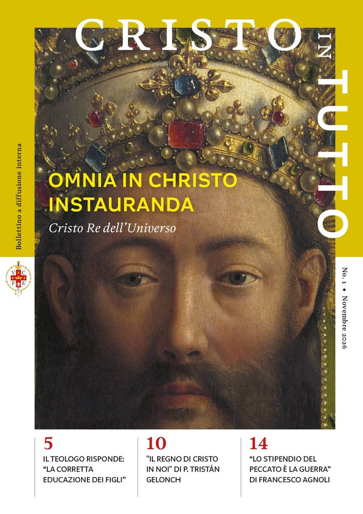

Virtus 1
IVE a Torino
Formazione
I libri, i manuali e i sussidi della comunità.
Formazione
I libri della comunità
La formazione dei terziari e degli amici dell'Istituto passa da pochi testi scelti: la collana Virtus di p. Miguel Ángel Fuentes, i documenti del Terzo Ordine, il catechismo della tradizione. Sono tutti qui, da leggere o scaricare.
Sono file PDF: si aprono nel browser e restano consultabili anche senza connessione, una volta scaricati. Non serve registrarsi.
Collana Virtus
Formazione umana e spirituale
Dodici volumi di p. Miguel Ángel Fuentes, IVE — Ediciones IVE. Psicologia e vita interiore: il difetto dominante, la volontà, la maturità, il perdono, l'accidia.
Virtus 3
«Duc in altum!»
Essenza e formazione della magnanimità
Apri il PDFVirtus 4
Da lupi ad agnelli
Educazione e grazia
Apri il PDFVirtus 7
Crisi di paternità
Il padre assente
Apri il PDFVirtus 10
Il cammino del perdono
Apri il PDFVirtus 13
La maturità secondo Cristo
L'uomo alla luce del Discorso della Montagna
Apri il PDFVirtus 14
Meditazioni su Dio Padre
Apri il PDFVirtus 15
La superficialità e la sindrome del frivolo
Apri il PDFVirtus 16
Educare la volontà
Apri il PDFVirtus 17
«Confidate sempre nel Signore»
Psicologia e spiritualità della fiducia · Salmo 62,9
Apri il PDFVirtus 18
Maturare la personalità
Apri il PDFVirtus 20
L'accidia
Appunti psicologici e spirituali sul «male della delusione»
Apri il PDFDocumenti
Manuali e sussidi
Spiritualità
Esercizi Spirituali
Il testo di Sant'Ignazio di Loyola: le annotazioni, le quattro settimane, le regole del discernimento.
Apri il PDFCatechismo
Il Catechismo Maggiore di San Pio X
Le quattro parti della dottrina cristiana: il Credo, l'orazione, i comandamenti, i sacramenti.
Apri il PDFTerzo Ordine
Essere una nuova incarnazione del Verbo
Manuale del Terzo Ordine Secolare dell'Istituto del Verbo Incarnato.
Apri il PDFMariologia
Rege O Maria
Apri il PDFI testi sono pubblicati con il permesso dell'Istituto del Verbo Incarnato. Se un file non si apre o trovi un errore, scrivi a info@iveatorino.it.
La rivista
«Cristo in Tutto»
«Omnia in Christo instauranda» — tutto ricapitolare in Cristo. Il primo numero è uscito il 1° novembre 2026.
In questo numero:
- Il grande male del secolo: l'ansia
- Il tesoro della Santa Messa
- Introduzione all'ateismo moderno
- L'annunciazione del Politico di Gand
Per ricevere i prossimi numeri iscriviti alla newsletter della comunità.
